drazen
zigic
Com 37 anos, como grande parte dos baristas, Drazen entrou no mundo dos cafés especiais por acaso. Atuava no mundo corporativo como gerente de projetos em uma startup quando foi apresentado ao universo dos cafés especiais e encantou-se pela diversidade e complexidade do segmento.
Drazen manteve seus estudos de cafés em paralelo a sua atividade comportativa, participou de várias competições amadoras e começou a ganhar destaque. Observando isso, decidiu investir em sua carreira como barista, foi convidado a atuar como barista no Octávio Café onde teve a oportunidade de vivenciar o mundo do café mais de perto e de participar de diversos cursos, especializando-se assim em cafés especiais.
Atualmente possui várias conquistas sendo algumas listadas a seguir:
- Globalmente reconhecido como um expert em cafés com mais de 15 anos de experiencia na industria.
- Mais de mais de 47 competições e fundador do anual World Coffee Reward;
- Atual campeão do German Latte Art Champion;
PROGRAMAS QUE O CURSO INCLUI:
- HABILIDADES DE BARISTA
- TUDO SOBRE CAFÉS
- CAFETERIA ITALIANA
.png) AEROPRESS
AEROPRESS
- LATTE ART
- BREWING FOUNDATION
- VARIAÇÕES DO EXPRESSO
-  FRENCHPRESS
Curso- Barista Pro
Domine 8 métodos de preparo
e conheça toda a história e os processos que fazem o café chegar até a sua xícara.
PRE LANÇAMENTO
COM 50% DE DESCONTO
de R$129,90
CURSO COMPLETO
COM CERTIFICADO
de R$97,90
Curso - Barista Pro.
Especialista em cafés e métodos de preparo.
MAIS DE 5.000 ALUNOS CERTIFICADOS
COM EXCELENTE AVALIAÇÃO NO MERCADO
"Muito bom o curso. Muito boa a didática do professor. É um curso empolgante, que dá vontade de ter aulas todos os dias. Recomendo a todos!”
Renne
“Eu já era apaixonada e entusiasta do café, com o curso eu amei de vez! É muito fácil de aprender com ele e não tem como parar mais!”
Stefany
“Ótimo curso, preço acessível e ensina o que promete. Superou minhas expectativas. Muito didático, claro, muito conhecimento.”
Evandro
CONTATO
Reserve sua vaga online - ganhe 20% de desconto!
Envie uma mensagem para obter mais informações.